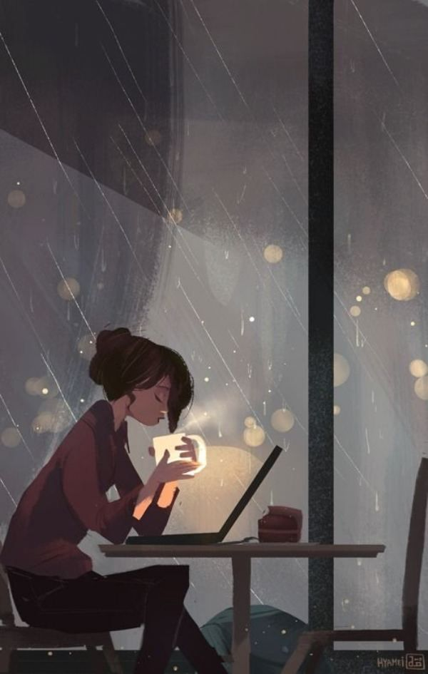
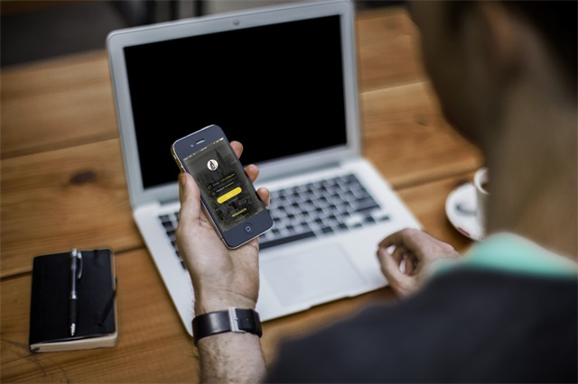

-
好久不见，忙里偷闲，我想约你出来寒暄，别说再见！
很多时候我们想要的只是拥有的感觉，得到之后都不再那么重要！
黑夜的你我，一定很不安；不知他日晴阴，今夕何年？忽然想来巷口的咖啡店，聊聊我们近来的故事和改变，似是熟悉却又难堪；织破了梦，拂乱了衣衫，长发翩翩，我却远远看着，似看而又不见。故事来源于生活，哲学来源于自然，人物你来看，我静候改变！

那日，我又来到熟悉的巷角咖啡店，空气中好似还弥漫着我们第一次相识时卡布奇诺的味道，貌似而又不舍！大明湖畔，炽热的空气丝毫没有因为湖水的荡漾而乖乖就擒，不过勉强可以接受，随性，自然；简单就是坚守，习惯就是生活！每一次读点小书都有马上写作的冲动，后来事多了也就养成了沉淀一段时间后写东西的习惯，没有她，我就觉得生活紊乱，时不时想起她，却总觉得少了点感觉，在路上，我还在寻找；习惯问自己一些问题，但每次我都会偏离主题避开这些疑问去寻找一些似乎南辕北辙的概念，迷惑都是虚无缥缈的，任何时刻都可能被创造，所以解决问题我从未获得成就感，反而短暂放松之后来一次长吁，没有所以然，只想舒服一点。生活本来就不该被问题束缚，活得返璞归真对现在这个网络钱欲的真实世界确实有点矛盾，但不绝对否则你也会陷进去，知道和适当坚守自我就好；工作是生活的一部分，但我不想把他们分开，这在你看来想必又是生活紊乱的表现，交织的切换，灵活的场景反而让我更容易都能产生跳跃的思维，想到不同领域交与并的奥妙。偶尔听一些前辈的建议或者看他们的文章，关于生活，关于人生，关于哲学的中肯道理，他们用经历去撰写生命的点点滴滴再加进去一些文艺和现代主流思想感染了许多当代教育体制产物的我们，自然倒是期待这样的作家和哲学家越来越多，多来两次“百家争鸣”也无妨。
生命就应该浪费在美好的事物与人上面，不要怀疑用"浪费"这个词语是否合适，你一直在寻找的就是那个不肯定的自己和想拥有的欲望影子，而非得到之后，接下来你只需要辨别"美好"，延长到死的改变！
-
有太多的人和事想写，如果有如果，你愿意回头走走?
又是一个熟悉的夜晚，看倦了四季交替，我却不知从何处下笔；好想睡下，心中没有牵挂，可我还是舍不了他们，答应过自己找到属于我自己的答案；外面茫茫，即使你看着很坚强，表面的沧桑与微笑，深处，却不敢走进去；充实繁忙也有他的徘徊和迷惘，人群的嘈杂，城市的浮嚣，不知道新鲜能维持多久；爱还没开始，就被简单的伤害，从此我背道而驰，踏上静心的闰土。
挣钱是年轻最基本的能力，有些人看着“所为”的别人很想跑快点，却待在“前辈”的套子里不知道从哪个方向爬出；因为你不敢拿过去10多年的历程来走条折腾路，于是你的竞争者越来越多，闯劲在犹豫中动态循环着。被朋友问起爱情观的意义，个人觉得那是一个青春岁月的象征和荷尔蒙的弥散过程，当然没有心思过多深入读书研究，现象来源于生活，也渴望遇到更多有才华的女性知音，想找到更多却被等待束缚了柔弱，在自己没有真正独立之前，发现很多仅仅只是孤寂的冲动，灵魂的压抑与环境的捉弄；爱情来的早与晚，对于否，不如来的刚刚好；你已备好，就等一个转身，一个微笑的开始，一次生命的邂逅，一个承诺的厮守，责任和相濡以沫要远比拥抱更有持久磁性；找到你就是我此生最伟大的幸福，没有之一，因为说爱你太简单，陪你一生不离不弃才是我接近你的目的，我不单纯，我们都是有想法的动物；大部分人都未有能力去爱，只想找个能让自己制造去爱和被爱感觉的对象而已，根本不懂得处理爱这回事，最终难怪剩下伤害和怨；这是一种极端，爱需要酸甜苦辣的交融，回首我们都将笑着谈这段你此生难忘的岁月史。
回首大学，自己在别人眼中算另类?这是导师偶然间聊到的话，我想写点东西问问自己；我不知道答案因为它早已无意识的产生各种行为，我也不太关注个人在其他人心中的感觉，只要不伤害他人的利益，待我还有利用价值，我都会全力而为；知识的沉淀与长远战略的布局已让环境产物发生了本质的变化，别人的反馈我们总要花时间和心思去总结信息的逻辑，我很荣幸能收到朋友真实的建议，倍感隆恩也将竭力下意识的指使我处理日后的每一次神经触发事件，环境和人的行为一直影响着我，至于你，想必比我更有想法吧！晚上拖着稍微疲惫的身躯走在熟悉而又陌生的大街上，现在的我是否最想要做的自己，所谓的身不由己都是挡住不熟悉人的借口罢了，匆忙而又孤寂的城市不是我们的朋友圈所能读懂的，我们一直都在逃避那个最不想束缚的自己，却在时光机研磨声里慢慢消沉殆尽，曾经的意气迸发也被生存法则抚平了棱角，我们在那段时间周期里彻底变得沉默与思考范；有时候真的好疲惫，肉体比精神多一点；真的老了?慢慢也被身边人和口头语意识化了，不过年轻依旧是折腾的资本，而精神和肉体的健康也都是奋斗的筹码；好多时候行为掩盖了闲暇时的虚伪，内心的矛盾交织着不断衰亡的脑细胞是一项残忍的游戏规则，我没法控制，投降的权限也被生活所剥夺，痛并执著着我们的信仰。偶然间看到几站路灯，十字路口，我们抉择的地方，我发现自己有好几个影子，百思不得其解，几次过后同一个台阶处，投影来源于不同的发光点，那些都是都市的产物，诱惑和环境就这样左右着你我的黑夜，直到出现光，你才知道阴影的奥妙，人生的方向和影子一样，被外界左右着，当你找不到答案时，走进它，垂直之下我们看到了脚下，你一定要自信，但别太乐观看待生活，因为你也很灵活，变化着。
最近除了工作学习就是创作睡觉，也想娱乐不过由你说了算；我时而惆怅和你一样，时而多情却难出口成章；有空就找人出去坐坐，不是因为孤寂的灵魂太久，而是为了找到一种感觉，这也是我们一直寻找的拥有的的感觉，暂时没有时间想其他可能；发状态更希望父母看到，起码证明笔者还健康的活着，还活着，望您二老多保重身体，儿子一切都好，一切都好，勿念，保重！
-
成功注定是一场孤独的旅行。而她，一直在路上，我还在寻找，等待！
生活的紧张节奏反而让自己最近成长了许多，读书写作这种习惯，只是为了找到最真的自己，即使工作再忙也不敢稍有懈怠，就在这午夜来场简单的对白；我喜欢一种习惯，和自己对话，不是因为太“孤独”，因为我想更快的成长，成熟，更好的反思走过的路；我喜欢一些网络文学社区里面的文章，我喜欢路上听故事，我喜欢这种状态，忙碌的自己而不是故意疏远你，曾经有无数个深夜我想掏出手机打给通讯录里的那些人，一次次克制住了自己的内心，我需要几个月来磨练这种孤忍的习性，我想拥有，所以我做出了现在的抉择和结果；一个电话，一条微信，确实可以找来一群好友，也许也只有在我们身份很相似时才会发生吧！好久不见，突然想和你寒暄，说说自己的改变，不如我们出来坐坐。也许素未谋面，但你依旧似在身边；是否你也发现手机通讯录数量越来越多，微信网络好友成千上万，念叨着许多所谓高大上的“云计算，互联网思维，电商web 3.0等”标签，那些人群里的生活真的是你想要的？也许有些人是不成群结队就会饱受“不合群”的煎熬，而有些人不太喜欢和信仰“合群”，只是表面应付得了；在世界的每个角落有无数的“不合群小姐”和“不合群先生”，他们在自己的小小天地里默默的耕耘，兢兢业业的编织着他们的梦想。最近看过一篇网文“你以为你在合群，其实你在浪费青春”，好像有些道理：英雄永远都是孤独的，只有小喽喽才扎堆，那些有些成就的人也都只是表面的合群，这样反而进退内外有度，希望你也是其中的一员。不要太在意，不习惯一个人上下班，坚守自我身边有几个真正的知心朋友，好闺蜜好基友，我想这些只有你经历真正的低谷与人生的跌宕起伏时才会显得尤为意义，到那时我们叫做“患难见真情”。有些旅途只能自己走，一个人可以很自由，很洒脱，可以有大把的时间投资自己，给自己充电，懂自己也自然更好的去凸凹别人，所以我们刚刚好，到那时再相遇！
黑夜的路上是情绪波动和精神压力最痛苦最重要的阶段，如果你实在坚持不了，你可以选择放弃或者停一停，走进屋里歇一歇，睡个好觉再次启航，祝愿你不要睡过头哟；走过的，路过的，都是我的心甘情愿。
在路上，你和谁在一起不重要，重要的是你找到旅行的感觉了？
-
不要考虑自己配不配拥有某些事物，当命运向你垂青，你应当有所回应
鄙人也曾无数次想过与你重逢，携你之手共进悲欢离合，只可惜由于个人较为抽象也没有很好的把握身边的人与事，深感遗憾与内疚；还好我们有大把的青春可以“挥霍”，我叫“青春岁月”，任由你这浪子过关斩将！人生因为相似才会吸引产生共振，就是我们所说的“感觉”。人生就是一列开往坟墓的列车，路途上会有很多站，很难有人可以自始至终陪你走完，当陪你的人要下车时，即使不舍，也该心存感激，然后挥手道别—《千与千寻》。很有哲理和韵味，即便你再完美，你都要面对人世命运，跟着你的感觉回应你的首映。

和一些高中好友或北漂聊天时经常能听到同一种感概：不满意现在的生活。记住，如果你在心里想“如果命运给我机会，我一定不会选择现在的IT开发者的身份，我反而会成为一名写手更有幸的话会成为一名作家”这种意识，那么不仅仅是你想换种生活情境那么简单了，我们都要生存，就好像很多生活里面的男主人公都是因为生活所迫而背道而驰，这些真实的写照而命运没有给他们重演的机会。说自己才华不够，嫌自己运气不好——不能称之为抱怨，因为每个人都希望自己未来会更加美好。幸运的是，身边的朋友们都很积极，当他们回望过去，遗憾都来自于过去种种不努力，最终结论也是满满的正能量：别吃了，别玩了，珍惜时间，努力加油，未来的生活一定能如你所愿。听完我总是很气愤，因为从我的角度看，他们都比我有才华，比我运气好，比我有成就，还比我更努力。
更让我触动的是：原来在每个人眼里，都觉得自己过得并不好。
讲个身边真实发生的小故事：前不久在健身房认识了一个私教，两年前从国家队退役，年轻美丽，看上像是芭蕾舞演员，一点都不像是马拉松选手。问她平时都忙些什么，她说除了锻炼身体，教课之外，就是吃饭睡觉了。爱好呢？爱好很多，现在还在坚持的，就剩听音乐了。为什么？因为听音乐不浪费时间。她笑着解释：我没有时间交朋友、没有时间谈恋爱，没有时间像别人一样享受生活，是因为我觉得现在还不够好，我应该更努力才是，在没有过上我想要的生活之前，不可以去玩耍，不配拥有爱情。
这让我有些震惊，因为我也曾和她相似，甚至一样。朋友叫我一起玩乐队，我在准备考试；朋友叫我一起去看电影，我在写小说；朋友叫我一起去旅游，我在写代码；朋友说我觉得你挺好，咱俩在一起吧，我说，等我毕业，等我写完这本书，等我找到好工作，等我先买个房再买个车，等我……还没等我成为更好的自己，那些垂青我的人和事，早已远去消失在人海。后来我反思，为什么，在那些命运垂青我的时刻，我没有坦然接受，我没有玩乐队、看电影、去旅行、谈恋爱呢？我也曾心动，也曾忐忑徘徊……可是最终都被一个理由打败了：现在我只要努力，就一定有更好的未来。更好未来里有更好的演出，更好的旅行，更好的姑娘，更好的命运的垂青吗？我可以负责地告诉你：没有。我现在依然在写文章忙稿子，依然在写代码做设计，依然在忙工作，我拒绝了本该拥有的享受，也并没有因此过得更好。每每想起过去错失良机，总是追悔不已。可这一切都不可以重来：时间不可以重来，年轻不可以重来，命运的垂青不可以重来。
这真是个残酷的人生。开场像《喜剧之王》尹天仇站在大海边的呐喊，让人充满希望，结尾是《推销员之死》里威利临死之前的幻想，让人不禁反思：你明天会更好吗，你未来可以功成名就吗？你现在失去的，未来可以更好的拥有吗……不知道。那现在呢？你过得好不好？有没有想过，现在就是过去的未来，现在的你就是过去眼里更好的自己。你现在生活中的那些人和事，就是过去的你的眼里更好的未来里的更好的演出、更好的旅行、更好的命运的垂青。听起来有点绕，当你把逻辑捋明白，是不是和我一样恍然大悟：一万个美丽的未来，抵不上一个温暖的现在。而《乌云背后的幸福线》里那句台词是对的：当命运向你垂青，你应当有所回应。
不要顾忌自己够不够好，配不配拥有。因为在这一刻，你就是最好的自己。在这一刻，你配拥有一切。
说实话，现在我很自信的呐喊：爱情、物质等很多欲望，我配得上它们，也有能力拥有，但关键是我现在不想要那么多虚的了. . .
-
备注声明
工作原因，文章板块均移步到微信公众平台的原创媒体，感兴趣者可以添加微信号：PhotoArtLife(或识别右侧二维码添加编辑WeChat)
二维码
微博私信
回到顶部